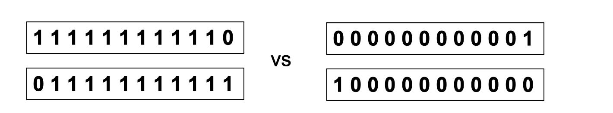
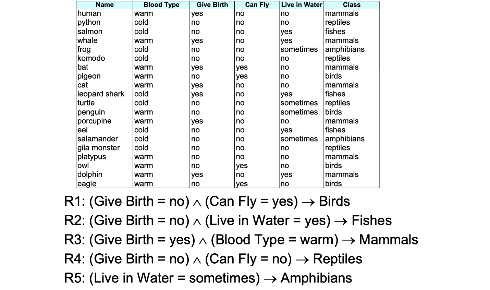
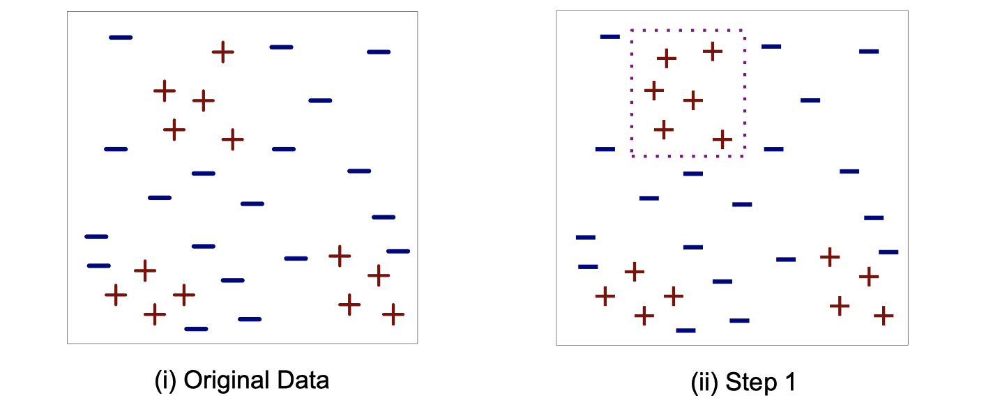
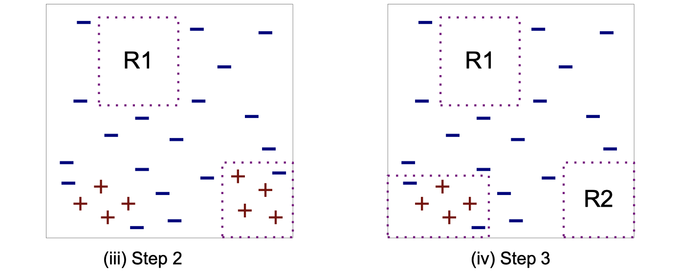
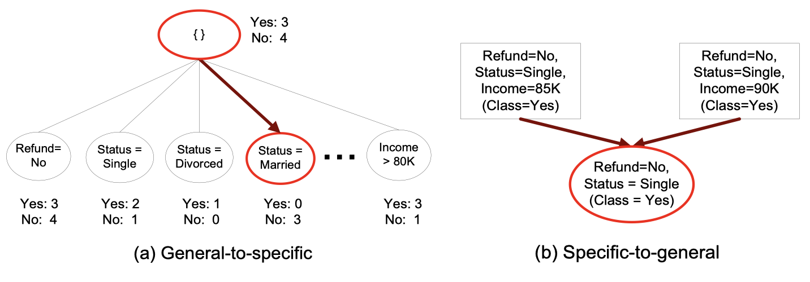

Overview of K Nearest Neighbor Classifiers and Rule-Based Classifiers
Acknowledgement: This course (CSCI 5523) is being offered by Prof. Vipin Kumar at the University of Minnesota in Fall 2020.
K Nearest Neighbor (KNN) Classfiers (Overview)
Basic idea: If it walks like a duck, quacks like a duck, then it’s probably a duck.
Require three things:
- The set of labeled records
- Distance metric to compute distance between records
- The value of
, the number of nearest neighbors to retrieve
To classify an unknown record:
- Compute distance to other training records
- identify k nearest neighbors
- Use class labels of nearest neighbors to determine the class label of unknown record
Sometimes we call KNN the laziest because it doesn’t do anything until we have to make a decision. In other words, there is not much happening during the training period.
To recall: to compute proximity between two points, we need certain distance metric.
For example: Euclidean distance
Next, determine the class from nearest neighbor list
- Take the majority vote of class labels among the KNNs
- Weight the vote accoridng to distance. E.g. weight factor
The value of k matters
- If k is too small, sensitive to noice points
- If k is too large, neighborhood may include points from other classes
Choice of promixity measure matters
For documents, cosine is better than correlation or Euclidean. E.g: in the image below, they have the same Euclidean distance but different cosine similarity.

Data preprocessing is often required
Arributes may have to be scaled to prevent distance measures from being dominated by one of the attributes. In addition, time series are often standardized to have a mean of 0 and a standard deviation of 1.
Is there a notion of complexity in KNN? Yes, the complexity may depend on the choice of . If the choice of
is 1, then we will get many arbitrary shapes that include a single record respectively. Any classifiers we learn, we shall think about its complexity. Decision tree’s complexity can be the depth of the tree, or whether the tree is a binary tree.
Issues of missing values in training and test sets
- Proximity computations normally require the presence of all attributes
- Some appoaches use the subset of attributes present in two instances
Issues of irrelevant and redundant attributes
- Irrelevant attributes add noise to the proximity measure
- Redundant attributes bias the proximity measure towards certain attributes
- Can use variable selection or dimensionality reduction to address irrelevant and redundant attributes
Improving KNN Efficiency
- Avoid having to compute distance to all objects in the training set
- Multi-dimensional access methods (k-d trees)
- Fast approximate similarity search
- Locality Sensetive Hashing (LSH)
- Condensing
- Determine a smaller set of objects that give the same performance
- Editing
- Remove objects to improve efficiency
Rule-Based Classifiers
Rule-based classifier: classify records by using a collection of “if…then…” rules.
Rule: (Condition)
-
Where
- Condition is a conjection of tests on attributes
is the class label
-
Exmaples of classification rules
- (Blood Type=Warm)
(Lay Eggs=Yes)
Birds
- (Taxable Income<50K)
- (Blood Type=Warm)
An example:

A rule covers an instance
if the attributes of the instance satisfy the condition of the rule, just like
,
, etc above.
covers a bird.
Rule Coverage and Accuracy
- Coverage of a rule
- Accuracy of a rule
Characteristics of Rule Sets: Strategy 1
-
Mutually exclusive rules
- Classifier contains mutually exclusive rules if the rules are independent of each other
- Every record is covered by at most one rule
-
Exhaustive Rules
- Classifier has exhaustive coverage if it accounts for every possible combination of attribute values
- Each record is covered by at least one rule
What if rules are not mutually exclusive?
- We can solve this by ordering rule sets. Rules are rank ordered according to their priority. When a test record is presented to the classifier, it will be assigned to the class label of the higheset ranked rule it has triggered. If none of the rules fired, it will be assigned to the default class. There are two ways to order rules:
- Rule-based ordering: Individual rules are ranked based on their quality
- Class-based ordering: Rules that belong to the same class appear together
Direct method to build classification rules
- Start from an empty rule
- Grow a rule using the Learn-One-Rule function
- Remove training records covered by the rule
- Repeat Step 2 and 3 until stopping criterion is met
Here is a visual example of the steps above:


Here are two common strategies to grow the rule:

Rule evaluation
- Foil’s Information Gain (FOIL: First Order Inductive Learner – an early rule-based learning algorithm)
: number of positive instances covered by R0
: number of negative instances covered by R0
: number of positive instances covered by R1
: number of negative instances covered by R1
Direct Method: RIPPER
- For 2-class problem, choose one of the classes as positive class, and the other as negative class.
- Learn rules for postiive class
- Negative class will be default class
- For multi-class problem
- Order the classes according to increasing class prevelence (fraction of instances that belong to a particular class)
- Learning the rule set for smallest class first, treat the rest as negative class
- Repeat with next smallest class as positive class
How to grow a rule in RIPPER?
- Start from empty rule
- Add conjuncts as long as they improve FOIL’s information gain
- Stop when rule no longer covers negative examples
- Prune the rule immediately using incremental reduced error pruning
- Measure for pruning
: number of positive examples covered by the rule in the validation set
: number of negative examples covered by the rule in the validation set
- Pruning method: delete any final sequence of conditions that maximizes
Build a rule set:
- Use sequential covering algorithms
- Find the best rule that covers the current set of positive examples
- Eliminate both positive and negative examples covered by the rule
- Each time a rule is added to the rule set compute the new description length
- Stop adding new rules when the new description length is a bit longer than the smallest description length obtained so far’
Advantages of Rule-Based Classifiers
- Has characterstics quite similiar to decision trees
- As highly expressive as decision trees
- Easy to interpret (if rules are ordered by class)
- Performance comparable to decision trees
- Can handle redundant and irrelevant attributes
- Variable interaction can cause issues (e.g., X-OR problem)
- Better suited for handling imbalanced classes
- Harder to handle missing values in the test set